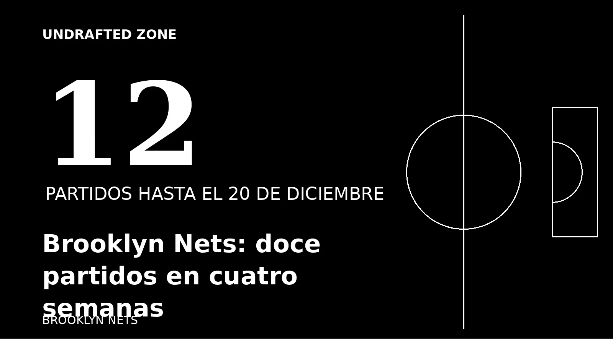

Brooklyn Nets: doce partidos en cuatro semanas y un parón
Brooklyn Nets juega doce partidos hasta el 20 de diciembre, con tres partidos en cuatro días y un parón de once. Qué se juega el equipo en ese mes.

Brooklyn Nets llega al 19 de noviembre con un 3-11 tras caer ante Chicago por 107-137, y con doce partidos por delante en las próximas cuatro semanas. Con datos de ESPN y la comprobación de Basketball-Reference, esta pieza no repasa el arranque, que ya está en la guía de temporada publicada en noviembre. Su pregunta es otra: qué se juega Brooklyn en ese mes de calendario, qué partidos pesan más y cuánto puede cambiar la temporada en esas cuatro semanas.
Doce partidos, seis fuera y un parón en diciembre
El próximo mes es un bloque irregular. Los Nets juegan seis partidos en casa y seis fuera entre el viernes 20 de noviembre y el domingo 20 de diciembre, pero el reparto no es uniforme: hay un tramo de tres partidos en cuatro días a finales de noviembre, luego un parón de once días sin jugar entre el 2 y el 13 de diciembre, y una recta final con cuatro partidos en casa en ocho días.
En hora de Nueva York, el calendario queda así. El viernes 20 reciben a Orlando, el lunes 23 juegan en Minnesota, el miércoles 25 visitan a Milwaukee, el viernes 27 a Toronto y el sábado 28 a Charlotte. El lunes 30 reciben a Oklahoma City y el miércoles 2 de diciembre visitan de nuevo a los Thunder. Después llega el parón, y el domingo 13 reciben a Boston, el lunes 14 visitan a Detroit y el miércoles 16 reciben a Dallas. El viernes 18 vuelve a recibir a Orlando y el domingo 20 cierra el mes contra Washington.
Lo que se juega en el tramo
Con 3-11 de partida, el mes no decide la temporada, pero sí marca el listón con el que Brooklyn llegará al tramo de diciembre. Si gana seis de los doce partidos, cerraría el mes con 9-17, un balance que dejaría al equipo en la parte baja del Este con margen para reaccionar. Si gana solo tres, llegaría a 6-20, y entonces la pregunta sería cuánto peso tiene la plantilla joven que el club está construyendo.
Lo que más pesa, en mi opinión, son los cuatro partidos en casa en ocho días de diciembre y los dos contra Orlando, que son las mejores oportunidades de ganar del bloque. Los partidos fuera de noviembre son más exigentes, y el calendario no permite contar con victorias fáciles en ninguno de ellos.
Randle y Porter Jr., la columna del ataque
Julius Randle es el jugador con más peso en el balance. Empieza los trece partidos, juega 33’1 minutos y promedia 20’9 puntos, 6’2 rebotes y 4’7 asistencias, con un 46’7% en tiros de campo y un 33’9% en triples. Es también el jugador que más reparte la pelota del equipo, y su volumen explica buena parte de la anotación. Para el origen de su papel en la plantilla, nuestro repaso de su llegada a Brooklyn es el punto de partida.
Michael Porter Jr. es la otra gran referencia. Empieza los doce partidos que ha jugado, juega 33’3 minutos y aporta 21’8 puntos y 7’4 rebotes, con un 46’2% en tiros de campo y un 37’6% en triples. Su eficiencia exterior es la mejor de los titulares de posición de perímetro, y en un calendario con tantos partidos fuera, esa amenaza desde la distancia es la que más puede cambiar un partido. El papel de Porter en la temporada se entiende mejor con el repaso de su futuro en el club.
El problema de los dos es el mismo que el de cualquier pareja de referencia: el resto de la rotación tiene que sostener la producción cuando alguno descansa o tiene minutos bajos. Y eso, con el equipo recibiendo 119’2 puntos por partido, cuesta.
Traoré, Sharpe y el banquillo
Nolan Traoré es la pieza que más ha crecido en la rotación de base. Empieza ocho de sus doce partidos, juega 22’6 minutos y promedia 13’6 puntos y 2’7 asistencias, con un 50’8% en tiros de campo y un 42’6% en triples. Su porcentaje desde la distancia es uno de los más altos de la plantilla, y eso le da al equipo una alternativa real en el perímetro cuando Randle sube el ritmo.
Day'Ron Sharpe es el que más reboteo aporta. Juega los trece partidos como titular, con 23’8 minutos, 8’6 puntos, 7’3 rebotes y 4’2 asistencias, y un 51’9% en tiros de campo. Su presencia en el poste da al equipo rebote de calidad en la rotación interior.
Desde la segunda unidad, Moritz Wagner promedia 10’3 puntos en 17’7 minutos, con un 60’0% en triples en una muestra pequeña, y Mikel Brown Jr. aporta 11’0 puntos y 3’8 asistencias en 22’2 minutos desde la suplencia. Egor Demin, con siete titularidades, promedia 10’4 puntos y 2’6 asistencias, y Danny Wolf, con cuatro, suma 9’5 puntos y un 47’1% en triples. Es un banquillo con anotación, aunque todavía falta regularidad en la defensa. Las piezas de rotación que llegaron en verano, con sus cifras de agencia libre, aparecen en nuestro análisis de los fichajes de Brooklyn.
Un equipo que anota poco y concede mucho
Con datos de ESPN, Brooklyn anota 110’9 puntos por partido y recibe 119’2, con un saldo de -8’4. Basketball-Reference, que todavía no recoge la derrota del miércoles, cifra el equipo en 3-10, 111’2 anotados y 117’8 recibidos, decimotercero del Este. La diferencia de catorce partidos frente a trece no cambia la lectura: el equipo pierde por márgenes de ocho a diez puntos de media, y su defensa es el punto que más se repite en las derrotas.
Las últimas tres derrotas lo confirman. El 14 de noviembre perdieron en Memphis por 110-129, el 16 cayeron ante Philadelphia por 123-135 y el 19 perdieron en casa ante Chicago por 107-137, una derrota de 30 puntos. Antes, el 11 de noviembre, ganaron en New Orleans por 145-111, la victoria más holgada del equipo esta temporada.
El parón de diciembre: descanso o pausa en la racha
Once días sin partido entre el 2 y el 13 de diciembre pueden leerse de dos maneras. La primera es la de un descanso necesario: después de dos semanas con tanto viaje, la plantilla llega a la recta final de diciembre con más piernas, y el cuerpo técnico tiene tiempo para trabajar la defensa, que es el punto que más se repite en las derrotas. La segunda es la de una pausa en la racha: un equipo que pierde casi todos sus partidos y se para once días puede enfriar el ritmo de competición.
En mi opinión, el parón favorece más a un equipo que ya ha encontrado un plan. Brooklyn todavía no tiene una combinación defensiva que se repita de partido en partido, y por eso el descanso sirve más como oportunidad para ajustar que como premio. Lo que sí parece claro es que la última semana de diciembre, con cuatro partidos en casa, es el momento en el que el equipo tendrá que demostrar si ese trabajo se ha traducido en algo.
Hay un matiz más: el calendario deja a los Nets con seis partidos fuera antes de Navidad, y ninguno de ellos conviene darlo por perdido de antemano. Milwaukee, Toronto y Charlotte son rivales del Este con los que el equipo tiene que competir de tú a tú. Eso hace que cada partido de ese tramo sea una pequeña prueba de si la plantilla ha entendido cómo quiere jugar.
Qué mirar en las próximas semanas
Hay tres preguntas que decidirán el mes de Brooklyn. La primera es si el equipo puede ganar uno de los dos partidos contra Orlando, que son los que mejor se pueden ganar. La segunda es cuánto aguanta la defensa en los partidos fuera, porque el bloque de finales de noviembre tiene tres visitas en cuatro días. La tercera es qué pasa en el tramo de diciembre, con cuatro partidos en casa en ocho días: si el equipo gana dos o tres, la temporada gana aire; si pierde los cuatro, el balance se vuelve estructural.
Con doce partidos, cualquier lectura es provisional. Esta pieza se actualizará cuando cambien las cifras y el estado de las bajas, y el aviso de «Actualizado» indicará la fecha. Hoy no hay bajas listadas para Brooklyn, según la página de lesiones consultada, y eso es lo único que el equipo tiene a su favor en el arranque de mes.
Preguntas frecuentes
¿Cuál es el balance de los Nets en 2026-27?
Tres victorias y once derrotas tras catorce partidos, con la derrota ante Chicago del miércoles incluida.
¿Quién es el máximo anotador del equipo?
Michael Porter Jr., con 21’8 puntos por partido, por delante de Julius Randle, con 20’9.
¿Quién reparte más asistencias?
Julius Randle, con 4’7 por partido. Day'Ron Sharpe promedia 4’2.
¿Cuándo es el próximo partido?
El viernes 20 de noviembre, en casa contra Orlando, a las 19:30 de Nueva York.
¿Por qué no aparecen salarios?
Porque esta pieza se centra en la rotación y el rendimiento, y no hay cifras salariales que se puedan contrastar con la misma solidez que las estadísticas. Para entender cómo encajan los contratos en el tope, nuestra guía sobre el tope salarial, la luxury tax y los aprons es el punto de partida.